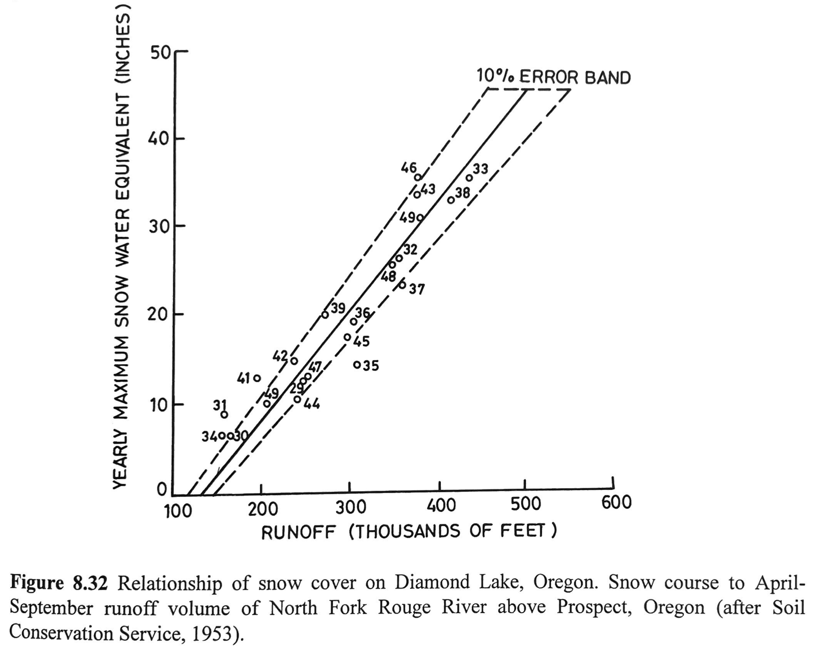

8) Snow-dominated watershed hydrology#
For this module, we will model snow and snow melt processes across the entire upper East River Valley.
“Snowpack-reservoirs” release their water during the melt season, and that water eventually makes its way to streams. One of the main goals of snow hydrologists is to predict the streamflow that will result from a melting snowpack. There a number of methods for doing this. One simple, tried and true method is regression analysis.
Streamflow-SWE Regression Analysis#
A simple empirical regression equation is used to predict streamflow from snowpack SWE,
where SWE is snowpack SWE measured at a site or from as now course, Q is streamflow/discharge, and a and b are fitted parameters to the linear relationship betwen SWE and Q. Q is often measured as the total streamflow during the melt season, such as total streamflow between April and July (aka AMJJ total streamflow). Linear regressions can do a surprisinngly good job at predicting streamflow year after year (see below, borrowed from Singh and Singh’S Snow and Glacier Hydrology textbook).

Distributed Modeling - Full Energy Balance Models#
Another method for predicting the water output from a snowpack is by numerically simulating the full energy balance of the snowpack. Full energy balance models represent the snowpack energy balance at a point, predicting the ripening process, the onset of snowmelt, and the transport of meltwater through the snowpack. Energy balance models can be expanded to run across a large area (such as a catchment) by running separate energy balance models at multiple points within the area. One way to scale the energy balance across an area is to run a separate energy balance for each grid cell in a digial elevation model (DEM).
openAMUNDSEN is an open source “snow and hydroclimataological modeling framework written in Python” that simulates the snowpack energy and mass balance across a landscape. It requires as inputs a DEM and at least one point measurement meteorological time series inputs (air temperature, relative humidity, precipitation, incoming shortwave radiation, and wind speed). Because of the relatively few inputs required by this model, it is easy to set up and run. The model spatially interpolates provided point measurements of meteorology and,takes into account terrain slope and aspect when calculating incoming shortwave radiation across the modeled landscape.
In the Labs and homework for this module, we will run openAMUNDSEN across the upper East River Valley, and run some experiments to better understand how rain-on-snow events affect the snowpack energy balance. Some examples of outputs from openAMUNDSEN are included in the image below.

Preparation for class#
On Thursday March 6th, we will hold a discussion on the paper linked below. Please read the paper, take notes, and prepare some discussion points.
Homework 7/8#
Problem 1 - Temperature-Index Method For this problem, we will use the Temperature-Index method for predicting snow melt, discussed in Module 7 and introduced in Lab 7-3.
a. Calculate Mf using measurements from the Schofield Pass Snotel station and report your value. I.E. mimic Lab 7-3 but for measurements from a different Snotel station. Use the same date range, 1990-2024. Note that we downloaded and used Schofield pass data in Lab 2-1.
b. Compare Mf values calculated at the Butte and Schofield Pass Snotel stations. Explain why you think one is larger/smaller than the other.
c. Choose an Mf value calculated from either the Butte or Schofield Pass Snotel stations, and model snowpack ablation at Kettle Ponds. I.E. mimic the second half of Lab 7-3 where we modeled snowpack ablation for the Butte Snotel station, but model snowpack ablation at Kettle Ponds using air temperature measurements at Kettle Ponds. Your solution to this problem should include:
A statement of which Mf value you selected to model snowpack ablation at Kettle Ponds, and why.
A plot of modeled and measured SWE during the ablation period (April 1 - June 1) (I.E. create a similar plot to the final plot generated in Lab 7-3).
d. Explain why you think modeled and measured ablation from part c disagree. What do you know happened during the 2024 ablation period and how are those represented or not represented in the degree day factor, Mf.
e. We know that the melting of the snowpack is a result of the snowpack energy balance (see Module 4). Explain, for each term in the energy balance equation, if and how the temperature-index method incorporates the influence of that energy flux term. To help you get started, here’s one part of the answer, for the ground heat flux term: The ground heat flux is not represented in the temperature-index method, because the air temperature and the ground heat flux are not related. First of all, the ground heat flux out of the earth is approximately constant, Second, snow is a great insulator, so ground heat flux is unlikely to impact air temperature. Therefore, air temperature does not incorporate the influence of the ground heat flux on snowpack melt.
Problem 2 - Distributed Modeling - Explaining the results of Lab 8-2
a. Lab 8-2 demonstrated that the model of the snowpack in the upper East River Valley melted out about three weeks later than the actual snowpack at Kettle Ponds. Explain, using the two plots generated in Lab 8-2 (modeled vs. measured SWE and modeled vs. measured energy balance), why you think the modeled snowpack melted out later than the measured snowpack.
b. Lab 8-2 demonstrated how the timing of snowmelt propagated spatially throughout the basin (see the 2x2 grid of snow melt plots towards the end of the lab). Explain how the spatial distribution of melt rates propagates throughout the basin, making sure to include the details of where melt starts first and why, and where it happens last and why. Explain why this spatio-temporal relationship exists.
Problem 3 - Distributed Modeling - Running experiments with the model: Rain-on-snow event vs Hot-Wind event
For this problem, you will modify the inputs to the model that we ran in Lab 8-2, and rerun the model. You will modify meteorological inputs and rerun the model twice, performing two experiments, and then compare the model results from the two experiments to the model results created during Lab 8-2.
Model experiment 1 - Hot-wind Event:
Modify your inputs in the following way: between 2023-05-28 and 2023-05-29 (including all hours from both days), set the temperature column to a constant +15˚C (288.15 K, note the inputs are in units of Kelvin) and the wind speed column to a constant 10 m/s.
Model experiment 2 - Rain-on-snow Event:
Modify your inputs in the following way: between 2023-05-28 and 2023-05-29 (including all hours from both days), set the temperature column to a constant +15˚C (288.15 K, note the inputs are in units of Kelvin) and the precip column to a constant 10.
You can modify the model inputs by directly editing the csv file (the inputs are in the file 1.csv), or you can use pandas to read in the csv, modify it, and rewrite the csv to disc.
I recommend the following steps for modifying inputs and saving model results:
Run the model as we did for Lab 8-2.
When the model runs, a directory
open_amundsen_resultswill be created automatically. Rename this directory to something else. I recommend a name that indicates these results are with the “actual/original” inputs, such asopen_amundsen_results_originalMake a copy of the input file
1.csv, to keep a copy of the original/actual input data. Rename it something like1_original.csv. Modify the1.csvfile according to the instructions above for one of the model experiments. Note that the model will run using the file1.csv, so make sure to edit that one, not your copy (1_original.csv).Rerun the model, then rename the newly created
open_amundsen_resultsdirectory. I recommend a name that indicates these are results associated with whichever model experiment you ran first, such asopen_amundsen_results_experiment_1.Delete
1.csv. Make a copy of1_original.csvand rename it to1.csv. Modify this file according to the instructions above for second model experiment.Rerun the model, then rename the newly created
open_amundsen_resultsdirectory. I recommend a name that indicates these are results associated with whichever model experiment you ran second, such asopen_amundsen_results_experiment_2.
You should now have three unique sets of model results, and you can begin looking at the results and answering the following homework questions:
a. Create a plot of modeled SWE from each of the three model results (original model run, the “warm rain” model results, and the “warm wind” model results) for the whole season. Your plot should include three lines (you don’t need to add measured SWE, although you can if you like). Make sure to label each of the three lines with appropriate labels, such as “original”, “warm rain experiment”, and “warm wind experiment”.
b. Explain how the SWE estimates differ. Explain how the “warm rain” and the “warm wind” event affected the snowpack melt-out differently/similarly and if these results are consistent with your expectations.
c. Create three plots, one plot using model results from each model run, that include energy balance terms for the time period May 25 - May 31. Include the following energy balance terms: Net radiation, sensible heat flux, latent heat flux, and precipitation energy flux. Note we created a plot like this in Lab 8-2.
d. Explain how the energy balances differ across the three model runs, particularly during the time period with artifically modified inputs (May 28 - 30). Make sure to include a discussion of: 1) Which energy balance terms are most important in each of the three model runs and 2) What these model experiments tell you about rain-on-snow events.
e. Based on your answers to d, answer the following: During a rain-on-snow event, which could theoretically include high winds, high air temperatures, and rainfall, what energy balance terms cause snow melt?